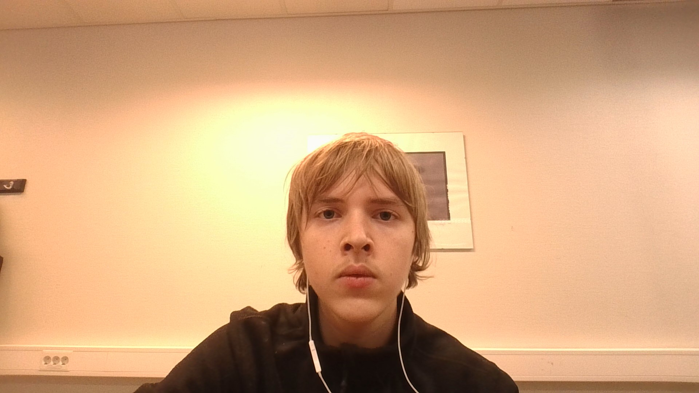

William Eugen Hellebust Kromvoll
William Eugen Hellebust Kromvoll

Mitt navn er William
Eugen og jeg er en IT student som går andre året på vidergående på bleiker vgs.
Jeg er en veldig grei og snil person som liker å designe nye ting og objekter.
Jeg vil si at jeg er en veldig kreativ person som finner muligheter og løsninger på
ting jeg er veldig interessert i. Jeg vil nok si at jeg er mer på designer delen når det gjelder koding
og design.


Mitt navn er William
Eugen og jeg er en IT student som går andre året på vidergående på bleiker vgs.
Jeg er en veldig grei og snil person som liker å designe nye ting og objekter.
Jeg vil si at jeg er en veldig kreativ person som finner muligheter og løsninger på
ting jeg er veldig interessert i. Jeg vil nok si at jeg er mer på designer delen når det gjelder koding
og design.
Jeg er veldig glad i naturen og jeg liker fjellnaturen spesielt godt. Mine hovedinteresser er gaming og naturen og hvis jeg ikke er inne å gamer, så er jeg mest sannsynelig ute i naturen alene eller med venner. Friluftsliv er en av de tingene jeg brenner for og dette inkluderer alt som fisking, fine turer, sopp plukking, filming og nyting
Min personlighet og interesser innefor mitt daglige liv:
Jeg er en completionist når det kommer til spill. jeg vil alltid få alt og bli ferdig med en ting før
jeg begynner på en ny ting. Dette er både litt irriterende, men også praktisk når det kommer til mitt arbeid og mål.
Jeg elsker platforming spill som for eksempel Sly Cooper trilogien og Ratchet and Clank spillene. En stor grunn til dette er fordi
jeg synes det er kjempegøy å samle på ulike samleobjekter og jeg elsker progresjonen og pacingen i disse type spill.
Det nye spillet
Star Wars Outlaws og Avatar: Frontiers of pandora er også et av mine favorittspill gjennom tidene. Grunnen til dette er nok fordi jeg liker
åpen verden type spill der man blir sluppet ut i en verden full av muligheter. Jeg synes dette er veldig fascinderende og det er
derfor det er et av mine favoritt sjangere innefor gaming.